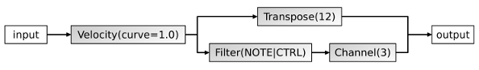
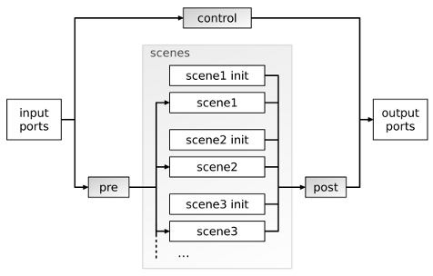

mididings configuration files are just Python scripts, although some of Python's features are used in ways for which they weren't intended ;) Like any other Python source file, mididings scripts get the filename extension .py.
Let's start with something very simple:
from mididings import * run(Transpose(3))
The import statement imports everything from the mididings Python module into the global namespace. The run() function is then used to
run a simple patch, in this case consisting of just a single Transpose() unit.
You can start this script by saving it to a Python file and executing it, for example:
$ python transpose3.py
What this script does is to create an ALSA MIDI client with one input and one output port. It will then start listening for events on the input port, transpose all incoming note-on and note-off events up by 3 semitones, and immediately send all events to the output port. Pressing Ctrl+C terminates the script.
Now, let's try something slightly more complex:
from mididings import *
config(
backend='jack-rt',
client_name='test',
)
run(
Velocity(curve=1.0) >> [
Transpose(12),
Filter(NOTE|CTRL) >> Channel(3),
]
)
The first thing that's new in this example is the config() function. This function is used to configure some global settings, and should usually be called only once, at the start of the script. Here, it is used to select the JACK backend instead of ALSA, and to change the JACK client name from 'mididings' to 'test'.
Now, let's look at the patch inside the run() function call. There are four mididings units used in this patch:
Each of these units is quite simple on its own, but what's important is how the units are connected to each other:
A graphical representation of the patch above would look something like this:

Note that for incoming note-on, note-off and CC events, this patch will output two events: one on the original MIDI channel, with notes being transposed by one octave, and one on channel 3, with no transposition. All other event types will result in only one event being sent to the output, because those event types are filtered out in the lower branch of the patch, and thus never even reach the Channel() unit.
TODO

TODO
With the mididings command line application, simple patches can also be specified directly in your favorite shell, so sometimes there's no need to write full-fledged Python scripts:
$ mididings "Transpose(3) >> Channel(2)"
Just think of the command line argument as being put directly into the run() function. See 'mididings --help' for some more options.
It's also worth mentioning that mididings can easily be used in an interactive Python session:
$ python -i -c "from mididings import *" >>> run(Transpose(3) >> Channel(2))
Overloading operators in Python does not change their precedence. This is a list of all operators relevant to mididings, in order of their precedence (highest to lowest):
| [A, B, ...] (...) |
Connection in parallel, using a list Binding (parentheses) |
| ~F | Filter inversion |
| -F | "True" filter inversion |
| A // B S % A |
Connection in parallel Selector |
| A >> B | Connection in series |
| F & G | Selector AND |
| F | G | Selector OR |
In short, just remember that...